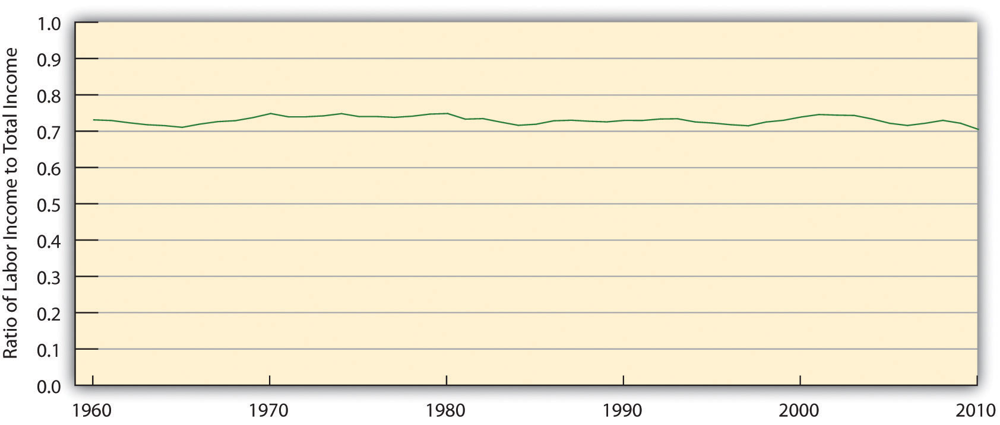
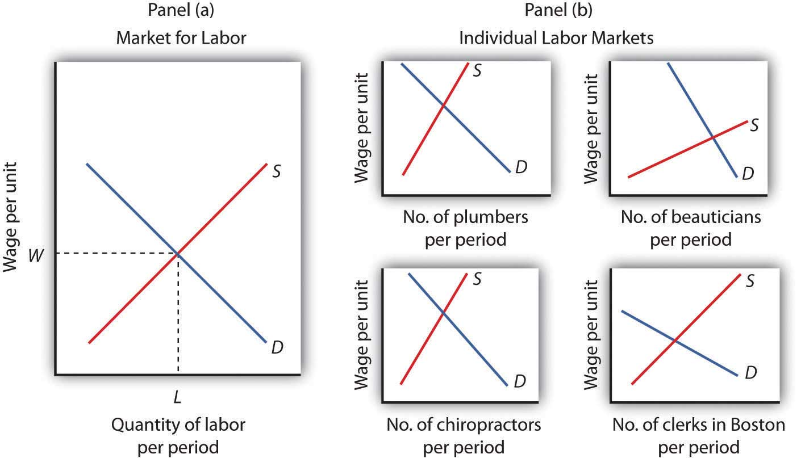
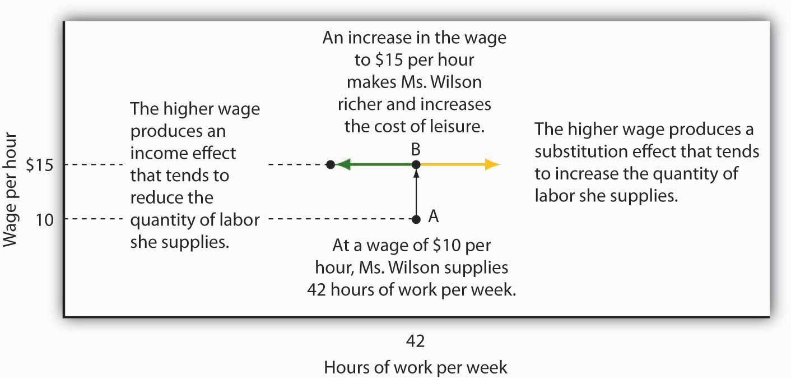
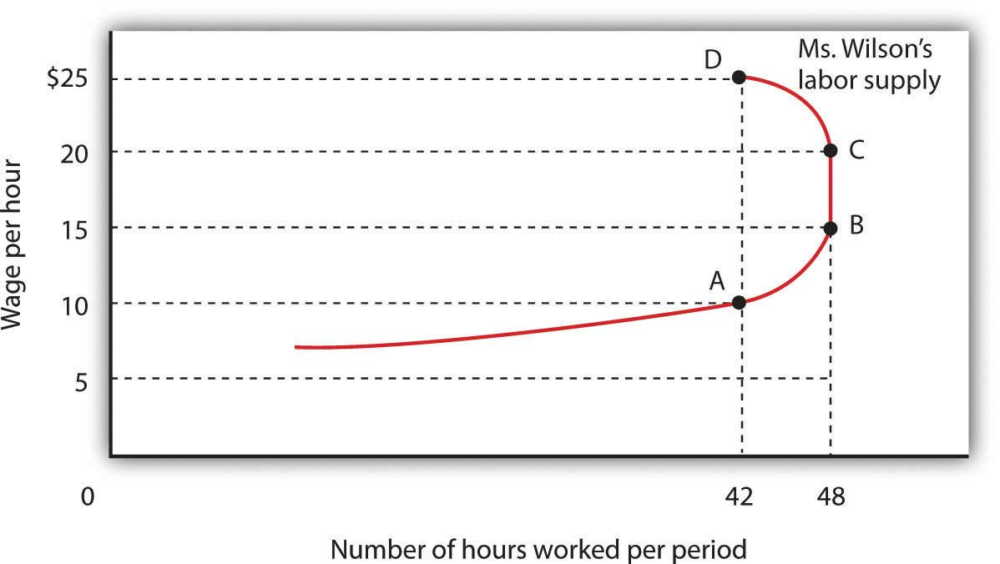
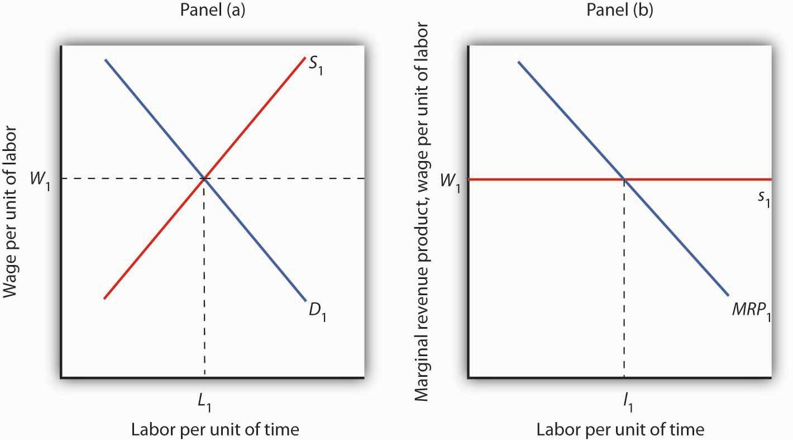
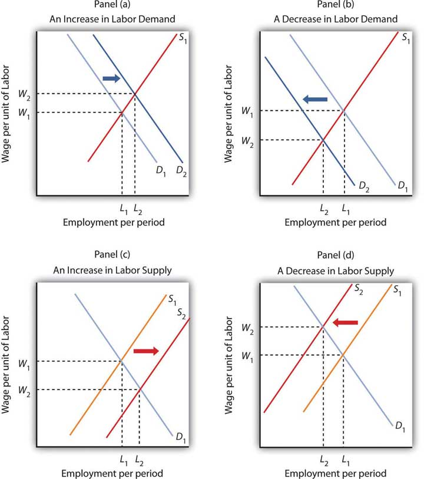
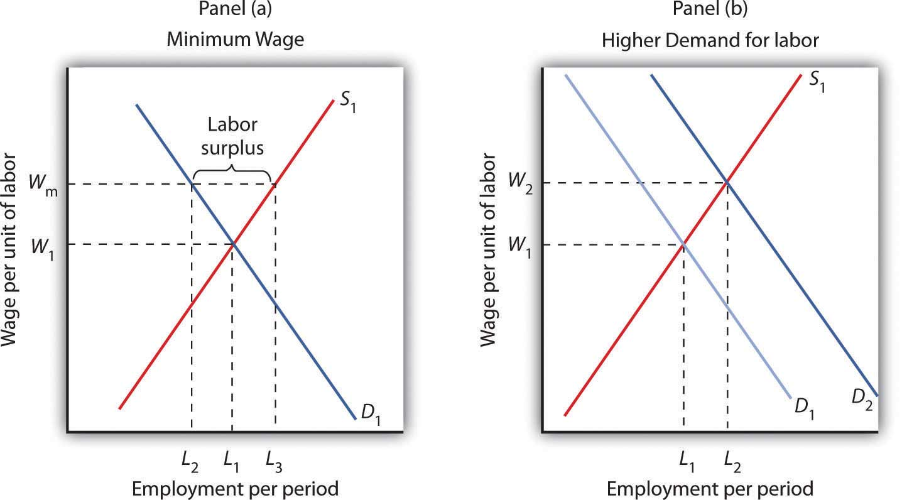

On NBC’s 2005 television series, The Apprentice: Street Smarts vs. Book Smarts, the contestants without college degrees who were chosen for the program were earning three times as much as those with college degrees. The two sides fought valiantly against each other, and the final episode pitted 37 year old, “street smart” Tana, a top-selling sales woman for Mary Kay, against 26 year old, “book smart” Kendra, a real estate agent. At the end of the Apprentice series, it was Kendra, the college graduate, to whom Donald Trump shouted, “You’re hired!” As the array of contestants in the series demonstrates, not every college graduate earns more than every high school graduate, but on average, that is certainly the case.
One way of measuring the payoff from college is to compare the extent to which the wages of college-trained workers exceed the wages of high school–trained workers. In the United States the payoff from college has soared over the last 30 years.
In 1979, male college graduates 25 years of age and older earned 30% more than male high school graduates in the same age bracket. By 2009 the gap had increased more than two and a half times—male college graduates earned a stunning 79% more than male high school graduates. Female college graduates gained as well. Female college graduates 25 years of age and older earned 56% more than their high school–educated counterparts in 1979; that gap increased to a whopping 96% by 2009.
The dramatic widening of the wage gap between workers with different levels of education reflects the operation of demand and supply in the market for labor. For reasons we will explore in this chapter, the demand for college graduates was increasing while the demand for high school graduates—particularly male high school graduates—was slumping.
Why would the demand curves for different kinds of labor shift? What determines the demand for labor? What about the supply? How do changes in demand and supply affect wages and employment? In this chapter we will apply what we have learned so far about production, profit maximization, and utility maximization to answer those questions in the context of a perfectly competitive market for labor.
This is the first of three chapters focusing on factor markets, that is, on markets in which households supply factors of production—labor, capital, and natural resources—demanded by firms. Look back at the circular flow model introduced in the initial chapter on demand and supply. The bottom half of the circular flow model shows that households earn income from firms by supplying factors of production to them. The total income earned by households thus equals the total income earned by the labor, capital, and natural resources supplied to firms. Our focus in this chapter is on labor markets that operate in a competitive environment in which the individual buyers and sellers of labor are assumed to be price takers. Other chapters on factor markets will discuss competitive markets for capital and for natural resources and imperfectly competitive markets for labor and for other factors of production.
Figure 12.1 Labor’s Share of U.S. Income, 1960–2010
Workers have accounted for 70% of all the income earned in the United States since 1960. The remaining income was generated by capital and natural resources.
Labor generates considerably more income in the economy than all other factors of production combined. Figure 12.1 "Labor’s Share of U.S. Income, 1960–2010" shows the share of total income earned annually by workers in the United States since 1960. Labor accounts for roughly 71% of the income earned in the U.S. economy. The rest is generated by owners of capital and of natural resources.
We calculate the total income earned by workers by multiplying their average wage times the number of workers employed. We can view the labor market as a single market, as suggested in Panel (a) of Figure 12.2 "Alternative Views of the Labor Market". Here we assume that all workers are identical, that there is a single market for them, and that they all earn the same wage, W; the level of employment is L. Although the assumption of a single labor market flies wildly in the face of reality, economists often use it to highlight broad trends in the market. For example, if we want to show the impact of an increase in the demand for labor throughout the economy, we can show labor as a single market in which the increase in demand raises wages and employment.
Figure 12.2 Alternative Views of the Labor Market
One way to analyze the labor market is to assume that it is a single market with identical workers, as in Panel (a). Alternatively, we could examine specific pieces of the market, focusing on particular job categories or even on job categories in particular regions, as the graphs in Panel (b) suggest.
But we can also use demand and supply analysis to focus on the market for a particular group of workers. We might examine the market for plumbers, beauticians, or chiropractors. We might even want to focus on the market for, say, clerical workers in the Boston area. In such cases, we would examine the demand for and the supply of a particular segment of workers, as suggested by the graphs in Panel (b) of Figure 12.2 "Alternative Views of the Labor Market".
Macroeconomic analysis typically makes use of the highly aggregated approach to labor-market analysis illustrated in Panel (a), where labor is viewed as a single market. Microeconomic analysis typically assesses particular markets for labor, as suggested in Panel (b).
When we use the model of demand and supply to analyze the determination of wages and employment, we are assuming that market forces, not individuals, determine wages in the economy. The model says that equilibrium wages are determined by the intersection of the demand and supply curves for labor in a particular market. Workers and firms in the market are thus price takers; they take the market-determined wage as given and respond to it. We are, in this instance, assuming that perfect competition prevails in the labor market. Just as there are some situations in the analysis of markets for goods and services for which such an assumption is inappropriate, so there are some cases in which the assumption is inappropriate for labor markets. We examine such cases in a later chapter. In this chapter, however, we will find that the assumption of perfect competition can give us important insights into the forces that determine wages and employment levels for workers.
We will begin our analysis of labor markets in the next section by looking at the forces that influence the demand for labor. In the following section we will turn to supply. In the final section, we will use what we have learned to look at labor markets at work.
A firm must have labor to produce goods and services. But how much labor will the firm employ? A profit-maximizing firm will base its decision to hire additional units of labor on the marginal decision rule: If the extra output that is produced by hiring one more unit of labor adds more to total revenue than it adds to total cost, the firm will increase profit by increasing its use of labor. It will continue to hire more and more labor up to the point that the extra revenue generated by the additional labor no longer exceeds the extra cost of the labor.
For example, if a computer software company could increase its annual total revenue by $50,000 by hiring a programmer at a cost of $49,000 per year, the marginal decision rule says that it should do so. Since the programmer will add $49,000 to total cost and $50,000 to total revenue, hiring the programmer will increase the company’s profit by $1,000. If still another programmer would increase annual total revenue by $48,000 but would also add $49,000 to the firm’s total cost, that programmer should not be hired because he or she would add less to total revenue than to total cost and would reduce profit.
The amount that an additional unit of a factor adds to a firm’s total revenue during a period is called the marginal revenue product (MRP)The amount that an additional unit of a factor adds to a firm’s total revenue during a period. of the factor. An additional unit of a factor of production adds to a firm’s revenue in a two-step process: first, it increases the firm’s output. Second, the increased output increases the firm’s total revenue. We find marginal revenue product by multiplying the marginal product (MP) of the factor by the marginal revenue (MR).
Equation 12.1
In a perfectly competitive market the marginal revenue a firm receives equals the market-determined price P. Therefore, for firms in perfect competition, we can express marginal revenue product as follows:
Equation 12.2
The marginal revenue product of labor (MRPL) is the marginal product of labor (MPL) times the marginal revenue (which is the same as price under perfect competition) the firm obtains from additional units of output that result from hiring the additional unit of labor. If an additional worker adds 4 units of output per day to a firm’s production, and if each of those 4 units sells for $20, then the worker’s marginal revenue product is $80 per day. With perfect competition, the marginal revenue product for labor, MRPL, equals the marginal product of labor, MPL, times the price, P, of the good or service the labor produces:
Equation 12.3
The law of diminishing marginal returns tells us that if the quantity of a factor is increased while other inputs are held constant, its marginal product will eventually decline. If marginal product is falling, marginal revenue product must be falling as well.
Suppose that an accountant, Stephanie Lancaster, has started an evening call-in tax advisory service. Between the hours of 7 p.m. and 10 p.m., customers can call and get advice on their income taxes. Ms. Lancaster’s firm, TeleTax, is one of several firms offering similar advice; the going market price is $10 per call. Ms. Lancaster’s business has expanded, so she hires other accountants to handle the calls. She must determine how many accountants to hire.
As Ms. Lancaster adds accountants, her service can take more calls. The table in Figure 12.3 "Marginal Product and Marginal Revenue Product" gives the relationship between the number of accountants available to answer calls each evening and the number of calls TeleTax handles. Panel (a) shows the increase in the number of calls handled by each additional accountant—that accountant’s marginal product. The first accountant can handle 13 calls per evening. Adding a second accountant increases the number of calls handled by 20. With two accountants, a degree of specialization is possible if each accountant takes calls dealing with questions about which he or she has particular expertise. Hiring the third accountant increases TeleTax’s output per evening by 23 calls.
Suppose the accountants share a fixed facility for screening and routing calls. They also share a stock of reference materials to use in answering calls. As more accountants are added, the firm will begin to experience diminishing marginal returns. The fourth accountant increases output by 20 calls. The marginal product of additional accountants continues to decline after that. The marginal product curve shown in Panel (a) of Figure 12.3 "Marginal Product and Marginal Revenue Product" thus rises and then falls.
Each call TeleTax handles increases the firm’s revenues by $10. To obtain marginal revenue product, we multiply the marginal product of each accountant by $10; the marginal revenue product curve is shown in Panel (b) of Figure 12.3 "Marginal Product and Marginal Revenue Product".
Figure 12.3 Marginal Product and Marginal Revenue Product

The table gives the relationship between the number of accountants employed by TeleTax each evening and the total number of calls handled. From these values we derive the marginal product and marginal revenue product curves.
We can use Ms. Lancaster’s marginal revenue product curve to determine the quantity of labor she will hire. Suppose accountants in her area are available to offer tax advice for a nightly fee of $150. Each additional accountant Ms. Lancaster hires thus adds $150 per night to her total cost. The amount a factor adds to a firm’s total cost per period is called its marginal factor cost (MFC)The amount that an additional unit of a factor adds to a firm’s total cost per period.. Marginal factor cost (MFC) is the change in total cost (ΔTC) divided by the change in the quantity of the factor (Δf):
Equation 12.4
The marginal factor cost to TeleTax of additional accountants ($150 per night) is shown as a horizontal line in Figure 12.4 "Marginal Revenue Product and Demand". It is simply the market wage (i.e., the price per unit of labor).
Figure 12.4 Marginal Revenue Product and Demand

The downward-sloping portion of a firm’s marginal revenue product curve is its demand curve for a variable factor. At a marginal factor cost of $150, TeleTax hires the services of five accountants.
TeleTax will maximize profit by hiring additional units of labor up to the point where the downward-sloping portion of the marginal revenue product curve intersects the marginal factor cost curve; we see in Figure 12.4 "Marginal Revenue Product and Demand" that it will hire five accountants. Based on the information given in the table in Figure 12.3 "Marginal Product and Marginal Revenue Product", we know that the five accountants will handle a total of 93 calls per evening; TeleTax will earn total revenue of $930 per evening. The firm pays $750 for the services of the five accountants—that leaves $180 to apply to the fixed cost associated with the tax advice service and the implicit cost of Stephanie Lancaster’s effort in organizing the service. Recall that these implicit costs include the income forgone (that is, opportunity cost) by not shifting her resources, including her own labor, to her next best alternative.
If TeleTax had to pay a higher price for accountants, it would face a higher marginal factor cost curve and would hire fewer accountants. If the price were lower, TeleTax would hire more accountants. The downward-sloping portion of TeleTax’s marginal revenue product curve shows the number of accountants it will hire at each price for accountants; it is thus the firm’s demand curve for accountants. It is the portion of the curve that exhibits diminishing returns, and a firm will always seek to operate in the range of diminishing returns to the factors it uses.
It may seem counterintuitive that firms do not operate in the range of increasing returns, which would correspond to the upward-sloping portion of the marginal revenue product curve. However, to do so would forgo profit-enhancing opportunities. For example, in Figure 12.4 "Marginal Revenue Product and Demand", adding the second accountant adds $200 to revenue but only $150 to cost, so hiring that accountant clearly adds to profit. But why stop there? What about hiring a third accountant? That additional hire adds even more to revenue ($230) than to cost. In the region of increasing returns, marginal revenue product rises. With marginal factor cost constant, not to continue onto the downward-sloping part of the marginal revenue curve would be to miss out on profit-enhancing opportunities. The firm continues adding accountants until doing so no longer adds more to revenue than to cost, and that necessarily occurs where the marginal revenue product curve slopes downward.
In general, then, we can interpret the downward-sloping portion of a firm’s marginal revenue product curve for a factor as its demand curve for that factor.Strictly speaking, it is only that part of the downward-sloping portion over which variable costs are at least covered. This is the flip-side of what you learned about a firm’s supply curve in the chapter on competitive output markets: Only the portion of the rising marginal cost curve that lies above the minimum point of the average variable cost curve constitutes the supply curve of a perfectly competitive firm. We find the market demand for labor by adding the demand curves for individual firms.
The Two Rules Lead to the Same Outcome
In the chapter on competitive output markets we learned that profit-maximizing firms will increase output so long as doing so adds more to revenue than to cost, or up to the point where marginal revenue, which in perfect competition is the same as the market-determined price, equals marginal cost. In this chapter we have learned that profit-maximizing firms will hire labor up to the point where marginal revenue product equals marginal factor cost. Is it possible that a firm that follows the marginal decision rule for hiring labor would end up producing a different quantity of output compared to the quantity of output it would choose if it followed the marginal decision rule for deciding directly how much output to produce? Is there a conflict between these two marginal decision rules?
The answer is no. These two marginal decision rules are really just two ways of saying the same thing: one rule is in terms of quantity of output and the other in terms of the quantity of factors required to produce that quantity of output. Hiring an additional unit of a factor means producing a certain amount of additional output.
Using the example of TeleTax, at $150 per accountant per night, we found that Ms. Lancaster maximizes profit by hiring five accountants. The MPL of the fifth accountant is ΔQ; it is 17. At five accountants, the marginal cost of a call is ΔTC/ΔQ = $150/17 = $8.82, which is less than the price of $10 per call, so hiring that accountant adds to her profit. At six accountants, the marginal cost of a call would be $150/13 = $11.54, which is greater than the $10 price, so hiring a sixth accountant would lower profit. The profit-maximizing output of 93 calls, found by comparing marginal cost and price, is thus consistent with the profit-maximizing quantity of labor of five accountants, found by comparing marginal revenue product and marginal factor cost.
The fact that a firm’s demand curve for labor is given by the downward-sloping portion of its marginal revenue product of labor curve provides a guide to the factors that will shift the curve. In perfect competition, marginal revenue product equals the marginal product of labor times the price of the good that the labor is involved in producing; anything that changes either of those two variables will shift the curve. The marginal revenue product of labor will change when there is a change in the quantities of other factors employed. It will also change as a result of a change in technology, a change in the price of the good being produced, or a change in the number of firms hiring the labor.
As a firm changes the quantities of different factors of production it uses, the marginal product of labor may change. Having more reference manuals, for example, is likely to make additional accountants more productive—it will increase their marginal product. That increase in their marginal product would increase the demand for accountants. When an increase in the use of one factor of production increases the demand for another, the two factors are complementary factors of productionFactors of production for which an increase in the use of one increases the demand for the other..
One important complement of labor is human capital, the set of skills and abilities workers bring to the production of goods and services. When workers gain additional human capital, their marginal product rises. The demand for them by firms thus increases. This is perhaps one reason why you have decided to pursue a college education.
Other inputs may be regarded as substitutes for each other. A robot, for example, may substitute for some kinds of assembly-line labor. Two factors are substitute factors of productionFactors of production for which an increase in the use of one decreases the demand for the other. if the increased use of one lowers the demand for the other.
Technological changes can increase the demand for some workers and reduce the demand for others. The production of a more powerful computer chip, for example, may increase the demand for software engineers. It may also allow other production processes to be computerized and thus reduce the demand for workers who had been employed in those processes.
Technological changes have significantly increased the economy’s output over the past century. The application of sophisticated technologies to production processes has boosted the marginal products of workers who have the skills these technologies require. That has increased the demand for skilled workers. The same technologies have been a substitute for less-skilled workers, and the demand for those workers has fallen. As the Case in Point on the impact of computer technology implies, envisioning the impact of technological change on demand for different kinds of labor may be something to keep in mind as you consider educational options. As you consider your major, for example, you should keep in mind that some occupations may benefit from technological changes; others may not.
A change in demand for a final product changes its price, at least in the short run. An increase in the demand for a product increases its price and increases the demand for factors that produce the product. A reduction in demand for a product reduces its price and reduces the demand for the factors used in producing it. Because the demand for factors that produce a product depends on the demand for the product itself, factor demand is said to be derived demandRefers to the idea that demand for factors of production depends on the demand for the products that use the factors of production.. That is, factor demand is derived from the demand for the product that uses the factor in its production.
Suppose, for example, that the demand for airplanes increases. The price and quantity of airplanes available will go up. A higher price for airplanes increases the marginal revenue product of labor of airplane-assembly workers and thus increases the demand for these workers.
Just as increases in the demand for particular goods or services increase the demand for the workers that produce them, so reductions in demand for particular goods or services will reduce the demand for the workers that produce them. An example is the relationship between the demand for train travel and the demand for conductors. Over the years, the fall in demand for train travel has reduced the demand for railroad conductors.
We can determine the demand curve for any factor by adding the demand for that factor by each of the firms using it. If more firms employ the factor, the demand curve shifts to the right. A reduction in the number of firms shifts the demand curve to the left. For example, if the number of restaurants in an area increases, the demand for waiters and waitresses in the area goes up. We expect to see local wages for these workers rise as a result.
How would each of the following affect the demand for labor by the accounting advice service, TeleTax, described in this chapter?
“…[M]oving an object, performing a calculation, communicating a piece of information or resolving a discrepancy…[W]hich of these tasks can be performed by a computer?” ask economists David H. Autor, Frank Levy, and Richard J. Murname.
In general, computers are good at performing routine tasks and substitute for labor that had performed such tasks in the past. Conversely, computers are complements for workers performing nonroutine tasks, i.e., tasks that require such attributes as creativity, flexibility, and problem-solving. As the price of computers has fallen in recent decades, the demand for labor performing nonroutine tasks, usually college-educated workers, has grown, while the demand for labor performing routine tasks has fallen. The chart below illustrates how computerization likely affects demand for different kinds of labor.

In studying the impact of computerization on labor demand, the study’s authors have also noted that changes in the nature of certain tasks (“task-shifting”) stemming from computerization have markedly changed what an occupation encompasses.
For example, the Department of Labor’s Occupation Outlook Handbook in 1976 described what secretaries do as: “Secretaries relieve their employers of routine duties so they can work on more important matters. Although most secretaries type, take shorthand, and deal with callers, the time spent on these duties varies in different types of organizations.” In contrast, the 2000 edition of the Handbook describes the work of secretaries quite differently: “As technology continues to expand in offices across the Nation, the role of the secretary has greatly evolved. Office automation and organizational restructuring have led secretaries to assume a wide range of new responsibilities once reserved for managerial and professional staff. Many secretaries now provide training and orientation to new staff, conduct research on the Internet, and learn to operate new office technologies.” The authors find that this task-shifting within occupations, away from routine tasks and towards nonroutine tasks, is pervasive.
Source: David H. Autor, Frank Levy, and Richard J. Murname, “The Skill Content of Recent Technological Change: An Empirical Exploration,” Quarterly Journal of Economics, 118: 4 (November 2003): 1279–1333.
The demand for labor is one determinant of the equilibrium wage and equilibrium quantity of labor in a perfectly competitive market. The supply of labor, of course, is the other.
Economists think of the supply of labor as a problem in which individuals weigh the opportunity cost of various activities that can fill an available amount of time and choose how to allocate it. Everyone has 24 hours in a day. There are lots of uses to which we can put our time: we can raise children, work, sleep, play, or participate in volunteer efforts. To simplify our analysis, let us assume that there are two ways in which an individual can spend his or her time: in work or in leisure. Leisure is a type of consumption good; individuals gain utility directly from it. Work provides income that, in turn, can be used to purchase goods and services that generate utility.
The more work a person does, the greater his or her income, but the smaller the amount of leisure time available. An individual who chooses more leisure time will earn less income than would otherwise be possible. There is thus a tradeoff between leisure and the income that can be earned from work. We can think of the supply of labor as the flip side of the demand for leisure. The more leisure people demand, the less labor they supply.
Two aspects of the demand for leisure play a key role in understanding the supply of labor. First, leisure is a normal good. All other things unchanged, an increase in income will increase the demand for leisure. Second, the opportunity cost or “price” of leisure is the wage an individual can earn. A worker who can earn $10 per hour gives up $10 in income by consuming an extra hour of leisure. The $10 wage is thus the price of an hour of leisure. A worker who can earn $20 an hour faces a higher price of leisure.
Suppose wages rise. The higher wage increases the price of leisure. We saw in the chapter on consumer choice that consumers substitute more of other goods for a good whose price has risen. The substitution effect of a higher wage causes the consumer to substitute labor for leisure. To put it another way, the higher wage induces the individual to supply a greater quantity of labor.
We can see the logic of this substitution effect in terms of the marginal decision rule. Suppose an individual is considering a choice between extra leisure and the additional income from more work. Let MULe denote the marginal utility of an extra hour of leisure. What is the price of an extra hour of leisure? It is the wage W that the individual forgoes by not working for an hour. The extra utility of $1 worth of leisure is thus given by MULe/W.
Suppose, for example, that the marginal utility of an extra hour of leisure is 20 and the wage is $10 per hour. Then MULe/W equals 20/10, or 2. That means that the individual gains 2 units of utility by spending an additional $1 worth of time on leisure. For a person facing a wage of $10 per hour, $1 worth of leisure would be the equivalent of 6 minutes of leisure time.
Let MUY be the marginal utility of an additional $1 of income (Y is the abbreviation economists generally assign to income). The price of $1 of income is just $1, so the price of income PY is always $1. Utility is maximized by allocating time between work and leisure so that:
Equation 12.5
Now suppose the wage rises from W to W′. That reduces the marginal utility of $1 worth of leisure, MULe/W, so that the extra utility of earning $1 will now be greater than the extra utility of $1 worth of leisure:
Equation 12.6
Faced with the inequality in Equation 12.6, an individual will give up some leisure time and spend more time working. As the individual does so, however, the marginal utility of the remaining leisure time rises and the marginal utility of the income earned will fall. The individual will continue to make the substitution until the two sides of the equation are again equal. For a worker, the substitution effect of a wage increase always reduces the amount of leisure time consumed and increases the amount of time spent working. A higher wage thus produces a positive substitution effect on labor supply.
But the higher wage also has an income effect. An increased wage means a higher income, and since leisure is a normal good, the quantity of leisure demanded will go up. And that means a reduction in the quantity of labor supplied.
For labor supply problems, then, the substitution effect is always positive; a higher wage induces a greater quantity of labor supplied. But the income effect is always negative; a higher wage implies a higher income, and a higher income implies a greater demand for leisure, and more leisure means a lower quantity of labor supplied. With the substitution and income effects working in opposite directions, it is not clear whether a wage increase will increase or decrease the quantity of labor supplied—or leave it unchanged.
Figure 12.5 "The Substitution and Income Effects of a Wage Change" illustrates the opposite pull of the substitution and income effects of a wage change facing an individual worker. A janitor, Meredith Wilson, earns $10 per hour. She now works 42 hours per week, on average, earning $420.
Figure 12.5 The Substitution and Income Effects of a Wage Change
The substitution and income effects influence Meredith Wilson’s supply of labor when she gets a pay raise. At a wage of $10 per hour, she supplies 42 hours of work per week (point A). At $15 per hour, the substitution effect pulls in the direction of an increased quantity of labor supplied, and the income effect pulls in the opposite direction.
Now suppose Ms. Wilson receives a $5 raise to $15 per hour. As shown in Figure 12.5 "The Substitution and Income Effects of a Wage Change", the substitution effect of the wage change induces her to increase the quantity of labor she supplies; she substitutes some of her leisure time for additional hours of work. But she is richer now; she can afford more leisure. At a wage of $10 per hour, she was earning $420 per week. She could earn that same amount at the higher wage in just 28 hours. With her higher income, she can certainly afford more leisure time. The income effect of the wage change is thus negative; the quantity of labor supplied falls. The effect of the wage increase on the quantity of labor Ms. Wilson actually supplies depends on the relative strength of the substitution and income effects of the wage change. We will see what Ms. Wilson decides to do in the next section.
What would any one individual’s supply curve for labor look like? One possibility is that over some range of labor hours supplied, the substitution effect will dominate. Because the marginal utility of leisure is relatively low when little labor is supplied (that is, when most time is devoted to leisure), it takes only a small increase in wages to induce the individual to substitute more labor for less leisure. Further, because few hours are worked, the income effect of those wage changes will be small.
Figure 12.6 "A Backward-Bending Supply Curve for Labor" shows Meredith Wilson’s supply curve for labor. At a wage of $10 per hour, she supplies 42 hours of work per week (point A). An increase in her wage to $15 per hour boosts her quantity supplied to 48 hours per week (point B). The substitution effect thus dominates the income effect of a higher wage.
Figure 12.6 A Backward-Bending Supply Curve for Labor
As the wage rate increases from $10 to $15 per hour, the quantity of labor Meredith Wilson supplies increases from 42 to 48 hours per week. Between points A and B, the positive substitution effect of the wage increase outweighs the negative income effect. As the wage rises above $15, the negative income effect just offsets the substitution effect, and Ms. Wilson’s supply curve becomes a vertical line between points B and C. As the wage rises above $20, the income effect becomes stronger than the substitution effect, and the supply curve bends backward between points C and D.
It is possible that beyond some wage rate, the negative income effect of a wage increase could just offset the positive substitution effect; over that range, a higher wage would have no effect on the quantity of labor supplied. That possibility is illustrated between points B and C on the supply curve in Figure 12.6 "A Backward-Bending Supply Curve for Labor"; Ms. Wilson’s supply curve is vertical. As wages continue to rise, the income effect becomes even stronger, and additional increases in the wage reduce the quantity of labor she supplies. The supply curve illustrated here bends backward beyond point C and thus assumes a negative slope. The supply curve for labor can thus slope upward over part of its range, become vertical, and then bend backward as the income effect of higher wages begins to dominate the substitution effect.
It is quite likely that some individuals have backward-bending supply curves for labor—beyond some point, a higher wage induces those individuals to work less, not more. However, supply curves for labor in specific labor markets are generally upward sloping. As wages in one industry rise relative to wages in other industries, workers shift their labor to the relatively high-wage one. An increased quantity of labor is supplied in that industry. While some exceptions have been found, the mobility of labor between competitive labor markets is likely to prevent the total number of hours worked from falling as the wage rate increases. Thus we shall assume that supply curves for labor in particular markets are upward sloping.
What events shift the supply curve for labor? People supply labor in order to increase their utility—just as they demand goods and services in order to increase their utility. The supply curve for labor will shift in response to changes in the same set of factors that shift demand curves for goods and services.
A change in attitudes toward work and leisure can shift the supply curve for labor. If people decide they value leisure more highly, they will work fewer hours at each wage, and the supply curve for labor will shift to the left. If they decide they want more goods and services, the supply curve is likely to shift to the right.
An increase in income will increase the demand for leisure, reducing the supply of labor. We must be careful here to distinguish movements along the supply curve from shifts of the supply curve itself. An income change resulting from a change in wages is shown by a movement along the curve; it produces the income and substitution effects we already discussed. But suppose income is from some other source: a person marries and has access to a spouse’s income, or receives an inheritance, or wins a lottery. Those nonlabor increases in income are likely to reduce the supply of labor, thereby shifting the supply curve for labor of the recipients to the left.
Several goods and services are complements of labor. If the cost of child care (a complement to work effort) falls, for example, it becomes cheaper for workers to go to work, and the supply of labor tends to increase. If recreational activities (which are a substitute for work effort) become much cheaper, individuals might choose to consume more leisure time and supply less labor.
An increase in population increases the supply of labor; a reduction lowers it. Labor organizations have generally opposed increases in immigration because their leaders fear that the increased number of workers will shift the supply curve for labor to the right and put downward pressure on wages.
One change in expectations that could have an effect on labor supply is life expectancy. Another is confidence in the availability of Social Security. Suppose, for example, that people expect to live longer yet become less optimistic about their likely benefits from Social Security. That could induce an increase in labor supply.
The supply of labor in particular markets could be affected by changes in any of the variables we have already examined—changes in preferences, incomes, prices of related goods and services, population, and expectations. In addition to these variables that affect the supply of labor in general, there are changes that could affect supply in specific labor markets.
A change in wages in related occupations could affect supply in another. A sharp reduction in the wages of surgeons, for example, could induce more physicians to specialize in, say, family practice, increasing the supply of doctors in that field. Improved job opportunities for women in other fields appear to have decreased the supply of nurses, shifting the supply curve for nurses to the left.
The supply of labor in a particular market could also shift because of a change in entry requirements. Most states, for example, require barbers and beauticians to obtain training before entering the profession. Elimination of such requirements would increase the supply of these workers. Financial planners have, in recent years, sought the introduction of tougher licensing requirements, which would reduce the supply of financial planners.
Worker preferences regarding specific occupations can also affect labor supply. A reduction in willingness to take risks could lower the supply of labor available for risky occupations such as farm work (the most dangerous work in the United States), law enforcement, and fire fighting. An increased desire to work with children could raise the supply of child-care workers, elementary school teachers, and pediatricians.
Economists Laura Duberstein and Karen Oppenheim Mason analyzed the labor-supply decisions of 1,383 mothers with preschool-aged children in the Detroit Metropolitan area.Laura Duberstein and Karen Oppenheim Mason, “Do Child Care Costs Influence Women’s Work Plans? Analysis for a Metropolitan Area,” Research Report, Population Studies Center, University of Michigan, Ann Arbor, July 1991.
They found that respondents were more likely to work the higher the wage, less likely to work if they preferred a traditional family structure with a husband as the primary breadwinner, less likely to work if they felt that care provided by others was strongly inferior to a mother’s care, and less likely to work if child-care costs were higher. Given these findings, explain how each of the following would affect the labor supply of mothers with preschool-aged children.
(Remember to distinguish between movements along the curve and shifts of the curve.) Is the labor supply curve positively or negatively sloped? Does the substitution effect or income effect dominate?
Arguably, no single sector of the U.S. economy was hit harder by the events of 9/11 than the airline industry. By the time passengers did start returning, though, more than just the routine of getting through airport security had changed. Rather, the structure of the industry had begun to shift from domination by large national carriers—such as Delta, American, and United—operating according to the hub-and-spoke model, to increased competition from lower-cost regional carriers offering point-to-point service. Efforts by the large carriers in the early 2000s to reign in their costs and restore their financial health led to agreements with their labor unions that resulted in lower wages for most categories of airline workers.
How have airline employees responded to lower wages? Some categories of workers, such as mechanics, have little flexibility in deciding how many hours to work, but others, such as pilots, do. Below is an explanation by a female pilot who works for a major airline of the impact of wages cuts on her labor supply:
“We were normally scheduled for anywhere from 15 to 18 days a month, which translated into 80 to 95 hours of flying and around 280 hours of duty time. Duty time includes flight planning, preflighting, crew briefing, boarding, preflight checks of the airplane, etc. We bid for a monthly schedule that would fall somewhere in that range. After we were assigned our schedule for a month, we usually had the flexibility to drop or trade trips within certain constraints. Without going into the vast complexities of our contract, I can tell you that, in general, we were allowed to drop down to 10 days a month, provided the company could cover the trips we wanted to drop, and still be considered a full-time employee. Generally, at that time, my goal was to work a minimum of 10 to 12 days a month and a maximum of 15 days a month.
After the first round of pay cuts, the typical month became 16 to 20 days of flying. With that round of pay cuts, my general goal became to work a minimum of 15 days a month and a maximum of 17 days a month. I imagine that with another round of cuts my goal would be to keep my pay as high as I possibly can.
Basically, I have a target income in mind. Anything above that was great, but I chose to have more days at home rather than more pay. As my target income became more difficult to achieve, I chose to work more days and hours to keep close to my target income…When total compensation drops by more than 50% it is difficult to keep your financial head above water no matter how well you have budgeted.”
Source: personal interview.
The first question is about willingness to work as the wage rate changes. It thus refers to movement along the labor supply curve. That mothers of preschool-age children are more willing to work the higher the wage implies an upward-sloping labor supply curve. When the labor supply curve is upward sloping, the substitution effect dominates the income effect. The other three questions refer to factors that cause the labor supply curve to shift. In all three cases, the circumstances imply that the labor supply curve would shift to the left.
We have seen that a firm’s demand for labor depends on the marginal product of labor and the price of the good the firm produces. We add the demand curves of individual firms to obtain the market demand curve for labor. The supply curve for labor depends on variables such as population and worker preferences. Supply in a particular market depends on variables such as worker preferences, the skills and training a job requires, and wages available in alternative occupations. Wages are determined by the intersection of demand and supply.
Once the wage in a particular market has been established, individual firms in perfect competition take it as given. Because each firm is a price taker, it faces a horizontal supply curve for labor at the market wage. For one firm, changing the quantity of labor it hires does not change the wage. In the context of the model of perfect competition, buyers and sellers are price takers. That means that a firm’s choices in hiring labor do not affect the wage.
The operation of labor markets in perfect competition is illustrated in Figure 12.7 "Wage Determination and Employment in Perfect Competition". The wage W1 is determined by the intersection of demand and supply in Panel (a). Employment equals L1 units of labor per period. An individual firm takes that wage as given; it is the supply curve s1 facing the firm. This wage also equals the firm’s marginal factor cost. The firm hires l1 units of labor, a quantity determined by the intersection of its marginal revenue product curve for labor MRP1 and the supply curve s1. We use lowercase letters to show quantity for a single firm and uppercase letters to show quantity in the market.
Figure 12.7 Wage Determination and Employment in Perfect Competition
Wages in perfect competition are determined by the intersection of demand and supply in Panel (a). An individual firm takes the wage W1 as given. It faces a horizontal supply curve for labor at the market wage, as shown in Panel (b). This supply curve s1 is also the marginal factor cost curve for labor. The firm responds to the wage by employing l1 units of labor, a quantity determined by the intersection of its marginal revenue product curve MRP1 and its supply curve s1.
If wages are determined by demand and supply, then changes in demand and supply should affect wages. An increase in demand or a reduction in supply will raise wages; an increase in supply or a reduction in demand will lower them.
Panel (a) of Figure 12.8 "Changes in the Demand for and Supply of Labor" shows how an increase in the demand for labor affects wages and employment. The shift in demand to D2 pushes the wage to W2 and boosts employment to L2. Such an increase implies that the marginal product of labor has increased, that the number of firms has risen, or that the price of the good the labor produces has gone up. As we have seen, the marginal product of labor could rise because of an increase in the use of other factors of production, an improvement in technology, or an increase in human capital.
Figure 12.8 Changes in the Demand for and Supply of Labor
Panel (a) shows an increase in demand for labor; the wage rises to W2 and employment rises to L2. A reduction in labor demand, shown in Panel (b), reduces employment and the wage level. An increase in the supply of labor, shown in Panel (c), reduces the wage to W2 and increases employment to L2. Panel (d) shows the effect of a reduction in the supply of labor; wages rise and employment falls.
Clearly, a rising demand for labor has been the dominant trend in the market for U.S. labor through most of the nation’s history. Wages and employment have generally risen as the availability of capital and other factors of production have increased, as technology has advanced, and as human capital has increased. All have increased the productivity of labor, and all have acted to increase wages.
Panel (b) of Figure 12.8 "Changes in the Demand for and Supply of Labor" shows a reduction in the demand for labor to D2. Wages and employment both fall. Given that the demand for labor in the aggregate is generally increasing, reduced labor demand is most often found in specific labor markets. For example, a slump in construction activity in a particular community can lower the demand for construction workers. Technological changes can reduce as well as increase demand. The Case in Point on wages and technology suggests that technological changes since the late 1970s have tended to reduce the demand for workers with only a high school education while increasing the demand for those with college degrees.
Panel (c) of Figure 12.8 "Changes in the Demand for and Supply of Labor" shows the impact of an increase in the supply of labor. The supply curve shifts to S2, pushing employment to L2 and cutting the wage to W2. For labor markets as a whole, such a supply increase could occur because of an increase in population or an increase in the amount of work people are willing to do. For individual labor markets, supply will increase as people move into a particular market.
Just as the demand for labor has increased throughout much of the history of the United States, so has the supply of labor. Population has risen both through immigration and through natural increases. Such increases tend, all other determinants of wages unchanged, to reduce wages. The fact that wages have tended to rise suggests that demand has, in general, increased more rapidly than supply. Still, the more supply rises, the smaller the increase in wages will be, even if demand is rising.
Finally, Panel (d) of Figure 12.8 "Changes in the Demand for and Supply of Labor" shows the impact of a reduction in labor supply. One dramatic example of a drop in the labor supply was caused by a reduction in population after the outbreak of bubonic plague in Europe in 1348—the so-called Black Death. The plague killed about one-third of the people of Europe within a few years, shifting the supply curve for labor sharply to the left. Wages doubled during the period.Carlo M. Cipolla, Before the Industrial Revolution: European Society and Economy, 1000–1700, 2nd ed. (New York: Norton, 1980), pp. 200–202. The doubling in wages was a doubling in real terms, meaning that the purchasing power of an average worker’s wage doubled.
The fact that a reduction in the supply of labor tends to increase wages explains efforts by some employee groups to reduce labor supply. Members of certain professions have successfully promoted strict licensing requirements to limit the number of people who can enter the profession—U.S. physicians have been particularly successful in this effort. Unions often seek restrictions in immigration in an effort to reduce the supply of labor and thereby boost wages.
The Case in Point on technology and the wage gap points to an important social problem. Changes in technology boost the demand for highly educated workers. In turn, the resulting wage premium for more highly educated workers is a signal that encourages people to acquire more education. The market is an extremely powerful mechanism for moving resources to the areas of highest demand. At the same time, however, changes in technology seem to be leaving less educated workers behind. What will happen to people who lack the opportunity to develop the skills that the market values highly or who are unable to do so?
In order to raise wages of workers whose wages are relatively low, governments around the world have imposed minimum wages. A minimum wage works like other price floors. The impact of a minimum wage is shown in Panel (a) of Figure 12.9 "Alternative Responses to Low Wages". Suppose the current equilibrium wage of unskilled workers is W1, determined by the intersection of the demand and supply curves of these workers. The government determines that this wage is too low and orders that it be increased to Wm, a minimum wage. This strategy reduces employment from L1 to L2, but it raises the incomes of those who continue to work. The higher wage also increases the quantity of labor supplied to L3. The gap between the quantity of labor supplied and the quantity demanded, L3 − L2, is a surplus—a surplus that increases unemployment.
Figure 12.9 Alternative Responses to Low Wages
Government can respond to a low wage by imposing a minimum wage of Wm in Panel (a). This increases the quantity of labor supplied and reduces the quantity demanded. It does, however, increase the income of those who keep their jobs. Another way the government can boost wages is by raising the demand for labor in Panel (b). Both wages and employment rise.
Some economists oppose increases in the minimum wage on grounds that such increases boost unemployment. Other economists argue that the demand for unskilled labor is relatively inelastic, so a higher minimum wage boosts the incomes of unskilled workers as a group. That gain, they say, justifies the policy, even if it increases unemployment.
An alternative approach to imposing a legal minimum is to try to boost the demand for labor. Such an approach is illustrated in Panel (b). An increase in demand to D2 pushes the wage to W2 and at the same time increases employment to L2. Public sector training programs that seek to increase human capital are examples of this policy.
Still another alternative is to subsidize the wages of workers whose incomes fall below a certain level. Providing government subsidies—either to employers who agree to hire unskilled workers or to workers themselves in the form of transfer payments—enables people who lack the skills—and the ability to acquire the skills—needed to earn a higher wage to earn more without the loss of jobs implied by a higher minimum wage. Such programs can be costly. They also reduce the incentive for low-skilled workers to develop the skills that are in greater demand in the marketplace.
Assuming that the market for construction workers is perfectly competitive, illustrate graphically how each of the following would affect the demand or supply for construction workers. What would be the impact on wages and on the number of construction workers employed?
Economist Daron Acemoglu’s research begins by noting that the college premium, defined as the average wages of college graduates relative to that of high school graduates, rose 25% between 1979 and 1995 in the United States. Also, during essentially the same period, wage inequality rose. Whereas in the early 1970s, a person in the 90th percentile of the wage distribution earned 266% more than a person in the 10th percentile earned, 25 years later the gap had increased to 366%. The consensus view maintains that the increase in the college premium and in wage inequality stem primarily from skill-biased technological change. Skill-biased technological change means that, in general, newly developed technologies have favored the hiring of workers with better education and more skills.
But while technological advances may increase the demand for skilled workers, the opposite can also occur. For example, the rise of factories, assembly lines, and interchangeable parts in the nineteenth century reduced the demand for skilled artisans such as weavers and watchmakers. So, the twentieth century skill-bias of technological change leads researchers to ask why recent technological change has taken the form it has.
Acemoglu’s answer is that, at least in part, the character of technological change itself constitutes a response to profit incentives:
The early nineteenth century was characterized by skill-replacing developments because the increased supply of unskilled workers in the English cities (resulting from migration from rural areas and from Ireland) made the introduction of these technologies profitable. In contrast, the twentieth century has been characterized by skill-biased technical change because the rapid increase in the supply of skilled workers has induced the development of skill-complementary technologies. (p. 9)
In general, technological change in this model is endogenous—that is, its character is shaped by any incentives that firms face.
Of course, an increase in the supply of skilled labor, as has been occurring relentlessly in the United States over the past century, would, other things unchanged, lead to a fall in the wage premium. Acemoglu and others argue that the increase in the demand for skilled labor has simply outpaced the increase in supply.
But this also begs the why question. Acemoglu’s answer again relies on the profit motive:
The development of skill-biased technologies will be more profitable when they have a larger market size—i.e., when there are more skilled workers. Therefore, the equilibrium degree of skill bias could be an increasing function of the relative supply of skilled workers. An increase in the supply of skills will then lead to skill-biased technological change. Furthermore, acceleration in the supply of skills can lead to acceleration in the demand for skill. (p. 37)
It follows from this line of reasoning that the rapid increase in the supply of college-educated workers led to more skill-biased technologies that in turn led to a higher college premium.
While these ideas explain the college premium, they do not address why the real wages of low-skilled workers have fallen in recent decades. Popular explanations include the decreased role of labor unions, the increased role of international trade, and immigration. Many studies, though, have concluded that the direct impacts of these factors have been limited. For example, in both the United States and United Kingdom, rising wage inequality preceded the decline of labor unions. Concerning the impact of trade and immigration on inequality, most research concludes that changes in these areas have not been large enough, despite how much they figure into the public’s imagination. For example, according to economists Aaron Steelman and John Weinberg, immigration accounted for a 2 million person increase in the labor force in the 1970s, when the baby boom and increased labor force participation of women added 20 million workers. During the 1980s, immigration was relatively high but still only accounted for a one percentage point increase, from 7 to 8%, in immigrant share of the total labor supply. While Acemoglu accepts those conclusions, he argues that labor market institutions and trade may have interacted with technological change to magnify technological change’s direct effect on inequality. For example, skill-biased technological change makes wage compression that unions tend to advocate more costly for skilled workers and thus weakens the “coalition between skilled and unskilled work that maintains unions” (p. 52). Likewise, trade expansion with less developed countries may have led to more skill-biased technological change than otherwise would have occurred.
Acemoglu recognizes that more research is needed to determine whether these indirect effects are operating and, if they are, the sizes of these effects, but looking at how technological change responds to economic conditions may begin to solve some heretofore puzzling aspects of recent labor market changes.
What is to be done, if anything, about widening inequality? Steelman and Weinberg argue, “First, do no harm.” They state,
Increased trade with LDCs and immigration from abroad likely have had little effect on wage inequality, while almost certainly adding to the strength and vitality of the American economy. Efforts to slow the growth of foreign goods or labor coming to our shores would be costly to Americans as a whole, as well as to those people who seem to be hurt by globalization at present. (p. 11)
However, they do suggest that policies to promote acquisition of skills, especially in early education where the return seems especially high, may be useful.
Sources: Daron Acemoglu, “Technical Change, Inequality, and the Labor Market,” Journal of Economic Literature 40:1 (March 2002): 7–73; Aaron Steelman and John A. Weinberg, “What’s Driving Wage Inequality,” Federal Reserve Bank of Richmond Economic Quarterly 91:3 (Summer 2005): 1–17.
In this chapter we have extended our understanding of the operation of perfectly competitive markets by looking at the market for labor. We found that the common sense embodied in the marginal decision rule is alive and well. A firm should hire additional labor up to the point at which the marginal benefit of doing so equals the marginal cost.
The demand curve for labor is given by the downward-sloping portion of the marginal revenue product (MRP) curve of labor. A profit-maximizing firm will hire labor up to the point at which its marginal revenue product equals its marginal factor cost. The demand for labor shifts whenever there is a change in (1) related factors of production, including investment in human capital; (2) technology; (3) product demand; and (4) the number of firms.
The quantity of labor supplied is closely linked to the demand for leisure. As more hours are worked, income goes up, but the marginal cost of work, measured in terms of forgone leisure, also increases. We saw that the substitution effect of a wage increase always increases the quantity of labor supplied. But the income effect of a wage increase reduces the quantity of labor supplied. It is possible that, above some wage, the income effect more than offsets the substitution effect. At or above that wage, an individual’s supply curve for labor is backward bending. Supply curves for labor in individual markets, however, are likely to be upward sloping.
Because competitive labor markets generate wages equal to marginal revenue product, workers who add little to the value of a firm’s output will receive low wages. The public sector can institute a minimum wage, seek to improve these workers’ human capital, or subsidize their wages.
Explain how each of the following events would affect wages in a particular labor market:
How do you think a wage increase would affect the quantity of labor supplied by each of the following speakers?
Felicia Álvarez, a bakery manager, faces the total product curve shown, which gives the relationship between the number of bakers she hires each day and the number of loaves of bread she produces, assuming all other factors of production are given.
| Number of bakers per day | Loaves of bread per day |
|---|---|
| 0 | 0 |
| 1 | 400 |
| 2 | 700 |
| 3 | 900 |
| 4 | 1,025 |
| 5 | 1,100 |
| 6 | 1,150 |
Assume that bakers in the area receive a wage of $100 per day and that the price of bread is $1.00 per loaf.
Suppose that wooden boxes are produced under conditions of perfect competition and that the price of a box is $10. The demand and supply curves for the workers who make these boxes are given in the table.
| Wage per day | Workers demanded | Workers supplied |
|---|---|---|
| $100 | 6,000 | 12,000 |
| 80 | 7,000 | 10,000 |
| 60 | 8,000 | 8,000 |
| 40 | 9,000 | 6,000 |
| 20 | 10,000 | 4,000 |
Plot the demand and supply curves for labor, and determine the equilibrium wage for box makers.
Assume that the market for nurses is perfectly competitive, and that the initial equilibrium wage for registered nurses is $30 per hour. Illustrate graphically how each of the following events will affect the demand or supply for nurses. State the impact on wages and on the number of nurses employed (in terms of the direction of the changes that will occur).
Plot the supply curves for labor implied by each of the following statements. In this problem, actual numbers are not important; rather you should think about the shape of the curve.
At an hourly wage of $10 per hour, Marcia Fanning is willing to work 36 hours per week. Between $30 and $40 per hour, she is willing to work 40 hours per week. At $50 per hour, she is willing to work 35 hours per week.
Jake Goldstone is working 30 hours per week. His marginal utility of income is 2, his marginal utility of leisure is 60, and his hourly wage is $20. Assume throughout this problem that the income effect is zero.
The table below describes the perfectly competitive market for dishwashers.
| Wage per day |
Quantity demanded per day (in thousands) |
Quantity supplied per day (in thousands) |
|---|---|---|
| $50 | 4.0 | 1.0 |
| 100 | 3.5 | 2.0 |
| 150 | 3.0 | 3.0 |
| 200 | 2.5 | 4.0 |
| 250 | 2.0 | 5.0 |